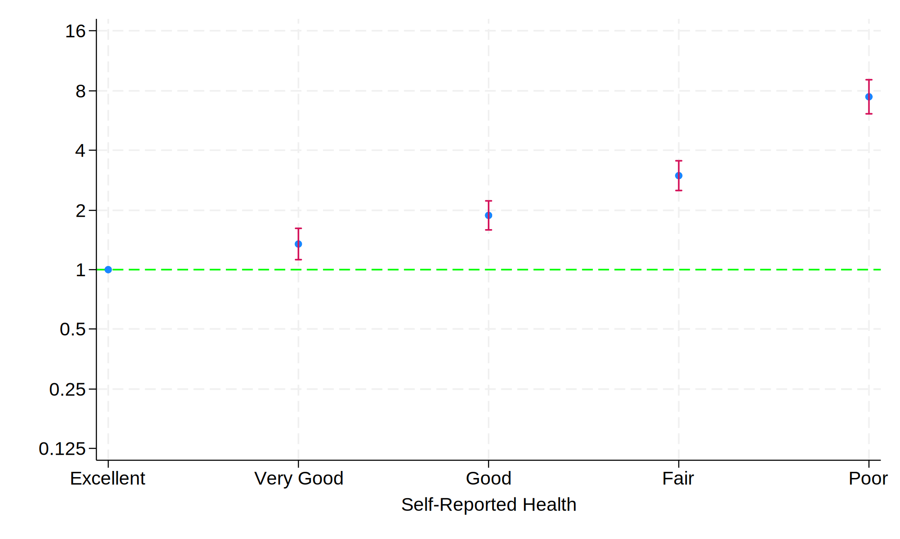
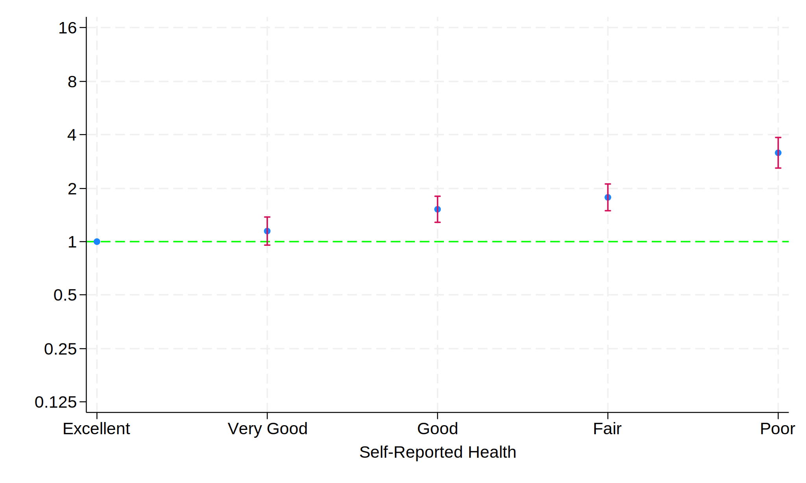
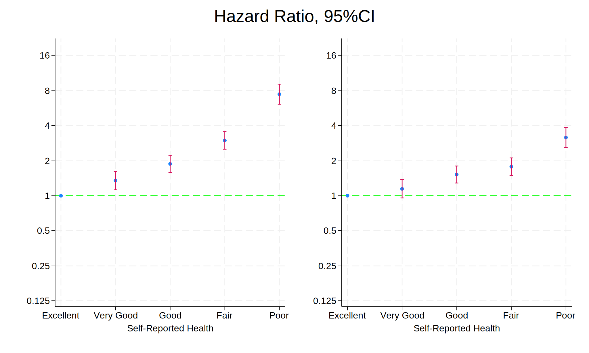
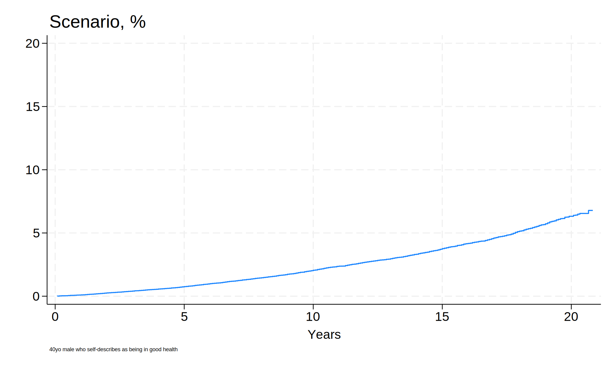

Setup Stata
. // Clear the log and any existing data in memory
. cls
. clear
. // Sytem-defined constant
. global workdir `c(pwd)'
. // Set up global variables for data repositories
. global repo "https://github.com/jhustata/project/raw/main/"
. global nhanes "https://wwwn.cdc.gov/Nchs/Nhanes/"
. **Load datasets for analysis**
. // Execute the followup.do script from the repository
. do ${repo}followup.do
. save followup, replace
. // Import NHANES demographic data from 1999-2000
. import sasxport5 "${nhanes}1999-2000/DEMO.XPT", clear
. // Merge the imported data with the "followup" data
. merge 1:1 seqn using followup, nogen
. save survey_followup, replace
.
. // Import additional parameters from NHANES health data
. import sasxport5 "${nhanes}1999-2000/HUQ.XPT", clear
. tab huq010
. merge 1:1 seqn using survey_followup, nogen keep(matched)
. // Remove intermediate datasets to free up space
. rm followup.dta
. rm survey_followup.dta
. **Setup Survival Analysis**
. // Create a new variable "years" by dividing "permth_int" by 12 to c
> onvert months to years
. g years=permth_int/12
. // Declare the survival-time data and specify "mortstat" as the fail
> ure event
. stset years, fail(mortstat)
. // Recode the "huq010" variable to missing if it equals 9 (unknown v
> alue)
. replace huq010=. if huq010==9
. label define huq 1 "Excellent" 2 "Very Good" 3 "Good" 4 "Fair" 5 "Po
> or"
. label values huq010 huq
. // Get the levels of the "huq010" variable
. levelsof huq010, local(numlevels)
. local i=1
. // Loop through the levels of "huq010" to create global legend label
> s
. foreach l of numlist `numlevels' {
. // Save the final dataset as "week7.dta"
. save week7, replace
.
. // Generate a Kaplan-Meier survival graph by "huq010" levels
. sts graph, ///
> by(huq010) /// Group by self-reported health status
> fail /// Display the failure function
> per(100) /// Display percentages
> ylab(0(20)80 , /// Label y-axis from 0 to 80 with increments
> of 20
> format(%2.0f) /// Format y-axis labels as integers
> ) ///
> xlab(0(5)20) /// Label x-axis from 0 to 20 with increments o
> f 5
> tmax(20) /// Limit the x-axis to 20 years
> ti("Self-Reported Health and Mortality") /// Title of the gr
> aph
> legend( /// Customize the legend
> order(5 4 3 2 1) /// Order legend entries
> lab(1 "$legend1") /// Label for "Poor" health status
> lab(2 "$legend2") /// Label for "Fair" health status
> lab(3 "$legend3") /// Label for "Good" health status
> lab(4 "$legend4") /// Label for "Very Good" health s
> tatus
> lab(5 "$legend5") /// Label for "Excellent" health s
> tatus
> ring(0) pos(11) /// Position the legend
> )
. // Export the graph as a PNG file
. graph export nonpara.png, replace
Figure 1. Kaplan-Meier Curves
Cox Proportional Hazards Regression
. stcox i.huq010, basesurv(s0)
. matrix define mat = r(table)
. matrix list mat
. matrix mat = mat'
. svmat mat
. preserve
. keep mat*
. drop if missing(mat1)
. rename (mat1 mat2 mat3 mat4 mat5 mat6 mat7 mat8 mat9)(b se z p ll ul
> df crit eform)
. g x=_n
. replace b=log(b)
. replace ll=log(ll)
. replace ul=log(ul)
. twoway (scatter b x) || ///
> (rcap ll ul x, ///
> yline(0, lcol(lime)) ///
> ylab( ///
> -2.08 "0.125" ///
> -1.39 "0.25" ///
> -.69 "0.5" ///
> 0 "1" ///
> .69 "2" ///
> 1.39 "4" ///
> 2.08 "8" ///
> 2.78 "16") ///
> legend(off) ///
> xlab( ///
> 1 "$legend1" ///
> 2 "$legend2" ///
> 3 "$legend3" ///
> 4 "$legend4" ///
> 5 "$legend5") ///
> xti("Self-Reported Health") ///
> )
. graph export semipara_unadj.png, replace
. graph save semipara_unadj.gph, replace
. restore
.

Figure 2. Unadjusted Cox Regression
. **hist ridageyr
. **graph export nonpara.png, replace
. //replace ridageyr=ridageyr/10
. capture drop s0
. stcox i.huq010 ridageyr riagendr, basesurv(s0)
. return list
. matrix define mat_adj=r(table)
. matrix define mat_adj=mat_adj'
. matrix list mat_adj
. svmat mat_adj
. keep mat_adj*
. drop if missing(mat_adj1)
. rename (mat_adj1 mat_adj2 mat_adj3 mat_adj4 mat_adj5 mat_adj6 mat_ad
> j7 mat_adj8 mat_adj9)(b se z p ll ul df crit eform)
. g x=_n
. replace b=log(b)
. replace ll=log(ll)
. replace ul=log(ul)
. twoway (scatter b x if inrange(x,1,5)) || ///
> (rcap ll ul x if inrange(x,1,5), ///
> yline(0, lcol(lime)) ///
> ylab( ///
> -2.08 "0.125" ///
> -1.39 "0.25" ///
> -.69 "0.5" ///
> 0 "1" ///
> .69 "2" ///
> 1.39 "4" ///
> 2.08 "8" ///
> 2.78 "16") ///
> legend(off) ///
> xlab( ///
> 1 "$legend1" ///
> 2 "$legend2" ///
> 3 "$legend3" ///
> 4 "$legend4" ///
> 5 "$legend5") ///
> xti("Self-Reported Health") ///
> )
. graph export semipara_adj.png, replace
. graph save semipara_adj.gph, replace

Figure 3. Adjusted Hazard Ratio by Self-Reported Health
. graph combine semipara_unadj.gph semipara_adj.gph, ///
> ycommon ti("Hazard Ratio, 95%CI")
. graph export unadj_adj.png, replace

Figure 4. Unadjusted vs Adjusted Hazard Ratio (95% CI)
. cls
. use week7, clear
. replace riagendr=riagendr-1
. stcox i.huq010 ridageyr riagendr, basesurv(s0)
. keep s0 _t _t0 _st _d
. save s0, replace
. ereturn list
. matrix beta = e(b)
. matrix vcov = e(V)
. matrix SV = ( ///
> 0, ///
> 1, ///
> 0, ///
> 0, ///
> 0, ///
> 40, ///
> 1 ///
> )
. matrix SV_ref = ( ///
> 0, ///
> 1, ///
> 0, ///
> 0, ///
> 0, ///
> 60, ///
> 1 ///
> )
. //absolute risk
. matrix risk_score = SV * beta'
. matrix list risk_score
. di exp(risk_score[1,1])
. matrix var_prediction = SV * vcov * vcov'
. matrix se_prediction = sqrt(var_prediction[1,1])
.
. matrix risk_score_ref = SV_ref * beta'
. matrix list risk_score_ref
. di exp(risk_score_ref[1,1])
. matrix var_prediction_ref = SV_ref * vcov * vcov'
. matrix se_prediction_ref = sqrt(var_prediction_ref[1,1])
.
. local hr = exp(risk_score_ref[1,1])/exp(risk_score[1,1])
. di `hr'
.
. //di "We conclude that `exp(risk_score[1,1])'"
.
. //
. g f0 = (1 - s0) * 100
. g f1_ = f0 * exp(risk_score[1,1])
. line f1 _t , ///
> sort connect(step step) ///
> legend(ring(0)) ///
> ylab(0(5)20) xlab(0(5)20) ///
> yti("") ///
> ti("Scenario, %", pos(11)) ///
> xti("Years") ///
> note("40yo male who self-describes as being in good health"
> ///
> ,size(1.5) ///
> )
. graph export scenario.png, replace

Figure 5. Scenario
Conclusion This study demonstrates a significant association between self-reported health status and mortality risk. We observed that lower self-reported health corresponds to an increased risk of mortality. Specifically, the hazard ratios (HR) indicate that as the perceived health status declines, the likelihood of mortality rises.
Our analysis revealed that the unadjusted hazard ratios were consistently higher than the adjusted hazard ratios. This suggests that when controlling for other factors such as age and gender, the direct impact of self-reported health on mortality is somewhat attenuated,yet remains significant.
In summary, self-reported health status is a strong predictor of mortality, with lower health ratings associated with higher mortality risks. This underscores the importance of self-perception in health outcomes and supports the inclusion of self-reported health measures in risk assessments and clinical evaluations.